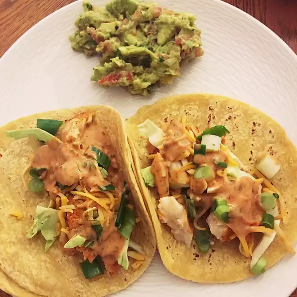

Fish Tacos

Description
Best fish tacos you will ever taste!
Ingredients:
- 2 pounds tilapia fillets
- 2 tablespoons lime juice
- 2 teaspoons salt
- 1 teaspoon ground black pepper
- 1 teaspoon garlic powder
- 1 teaspoon paprika
- cooking spray
- ½ cup plain fat-free yogurt
- 2 tablespoons lime juice
- 1 ½ tablespoons chopped fresh cilantro
- 1 ½ teaspoons canned chipotle peppers in adobo sauce
- 16 (5 inch) corn tortillas
- 2 cups shredded cabbage
- 1 cup shredded Monterey Jack cheese
- 1 tomato, chopped
- 1 avocado - peeled, pitted, and sliced
- ½ cup salsa
- 2 green onions, chopped
Steps:
- Rub tilapia fillets with 2 tablespoons lime juice and season with salt, black pepper, garlic powder, and paprika. Spray both sides of each fillet with cooking spray.
- Preheat grill for medium heat and lightly oil the grate.
- Combine yogurt, 2 tablespoons lime juice, cilantro, and chipotle pepper in a blender; pulse until sauce is well blended. Set aside.
- Grill tilapia on preheated grill until fish is easily flaked with a fork, about 5 minutes on each side.
- Heat each corn tortilla in a skillet over medium-low heat until warm, about 1 minute. Divide grilled fish evenly over corn tortillas and serve with cilantro-lime sauce, cabbage, Monterey Jack cheese, tomato, avocado, salsa, and green onions.